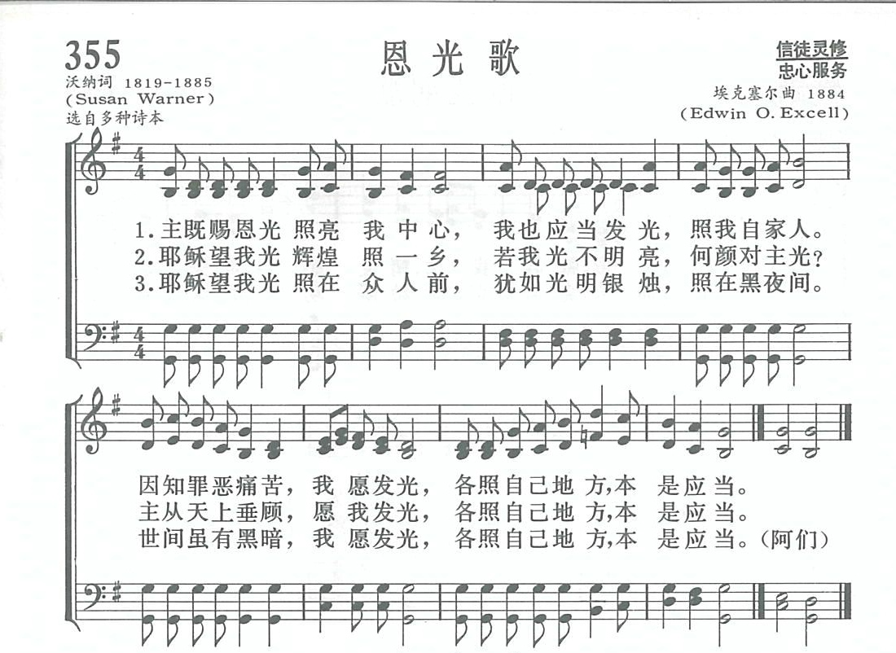
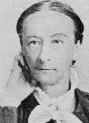
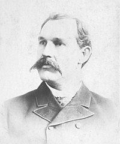

|
|
新编赞美诗400首：恩光歌355 |
|
1 Jesus bids us shine, with a clear, pure light, 2 Jesus bids us shine, first of all for Him; 3 Jesus bids us shine, then, for all around 4 Jesus bids us shine, as we work for Him, |
主既赐恩光照亮我中心 |
|
https://www.zanmeishige.com/tab/14028.html?songbook=1&index=355

|
|
|
|
|


https://www.youtube.com/watch?v=ap0NluCAHIc -
Hymn - Jesus Bids Us Shine The Kirk Virtual Choir
https://youtu.be/DJwsRCBTd0g
| Short Name: | Susan Warner |
| Full Name: | Warner, Susan, 1819-1885 |
| Birth Year: | 1819 |
| Death Year: | 1885 |

Tune Information
| Title: | [Jesus bids us shine] (Excell) |
| Composer: | E. O. Excell |
| Meter: | 5.5.6.5.6.4.6.4 |
| Incipit: | 15555 12177 25555 |
| Key: | G Major |
| Copyright: | Public Domain |
| Short Name: | E. O. Excell |
| Full Name: | Excell, E. O. (Edwin Othello), 1851-1921 |
| Birth Year: | 1851 |
| Death Year: | 1921 |
Edwin Othello Excel USA 1851-1921.

Born at Uniontown, OH, he started working as a bricklayer and plasterer. He loved music and went to Chicago to study it under George Root. He married Eliza Jane “Jennie” Bell in 1871. They had a son, William, in 1874. A member of the Methodist Episcopal Church, he became a prominent publisher, composer, song leader, and singer of music for church, Sunday school, and evangelistic meetings. He founded singing schools at various locations in the country and worked with evangelist, Sam Jones, as his song leader for two decades. He established a music publishing house in Chicago and authored or composed over 2,000 gospel songs. While assisting Gypsy Smith in an evangelistic campaign in Louisville, KY, he became ill, and died in Chicago, IL. He published 15 gospel music books between 1882-1925. He left an estate valued at $300,000.
John Perry
第355首 恩光歌 Jesus bids us shine _S．Warner
经文：“你们显在这世代中，好像明光照耀”(腓2：l5)。
这首诗的作者苏珊．沃纳(S．Warner，18l9—1885,见第239首注①)是第239首《耶稣爱我歌》的作者安娜。沃纳的姐姐。姐妹人都住在美国赫德森河西点军校附近的宪法岛。父亲是一位失意的律师，姐妹二人很早即以写文章来维持生活，出版近二十本小说和翻译、创作圣诗集多册。她们生活俭朴，虔诚事主，多年来时常被西点军校请去为士兵领查经班。
曲作者埃克塞尔(事略参阅第237首)是美籍德人，以唱歌、作谱闻名，晚年在芝加哥自办印刷工厂，厂名至今还用埃克塞尔这个名字。
主耶稣教训我们：“你们的光也当这样照在人前，叫他们看见你们的好行为，便将荣耀归给你们在天上的父。”这首《恩光歌》也点出了基督徒在世应当发光，照亮自己的地方。歌词是以第一人称出现，要各人自己乐意地为主发光，这原是每个基督徒的本分。
曲调很活泼，老幼皆爱唱。
https://www.xueshengshi.com/?p=9438
E. O. Excell 1851–1921
|
Prof. E. O. Excell
|
|
|---|---|
|

by Collins of New York, circa 1890
|
|
| Born |
December 13, 1851 |
| Died |
June 10, 1921 (aged 69)
Wesley Hospital, Chicago, Illinois
|
| Resting place | Oak Woods Cemetery, Chicago |
| Education | Studied music under George F. and Frederick W. Root |
| Occupation |
Music Publisher composer Chorister Vocalist |
| Employer | E. O. Excell (Company) |
| Known for | Leading American hymnbook publisher, Arrangement of Amazing Grace, Gospel songs Count your blessings and I'll Be a Sunbeam |
| Spouse(s) |
Eliza Jane (Bell) Excell
(m. 1871) |
| Children | William Alonzo |
| Parent(s) |
J. J. Excell Emily (Hess) Excell |
| Signature | |
Edwin Othello Excell (December 13, 1851 – June 10, 1921), commonly known as E. O. Excell, was a prominent American publisher, composer, song leader, and singer of music for church, Sunday school, and evangelistic meetings during the late nineteenth and early twentieth centuries. Some of the significant collaborators in his vocal and publishing work included Sam P. Jones, William E. Biederwolf, Gipsy Smith, Charles Reign Scoville, J. Wilbur Chapman, W. E. M. Hackleman, Charles H. Gabriel and D. B. Towner.
His 1909 stanza selection and arrangement of Amazing Grace became the most widely used and familiar setting of that hymn by the second half of the twentieth century.[2] The influence of his sacred music on American popular culture through revival meetings, religious conventions, circuit chautauquas, and church hymnals was substantial enough by the 1920s to garner a satirical reference by Sinclair Lewis in the novel Elmer Gantry.[3]
Excell compiled or contributed to about ninety secular and sacred song books and is estimated to have written, composed, or arranged more than two thousand of the songs he published.[4] The music publishing business he started in 1881 and that eventually bore his name was the highest volume producer of hymnbooks in America at the time of his death.[5]
Early years[edit]
Excell was the son of German Reformed minister and self-published author J. J. Excell.[6] He was born in Uniontown, Stark County, Ohio and attended public schools in Ohio and Pennsylvania. After marrying in 1871 near Brady's Bend, Pennsylvania, he relocated to that state and supported his family for several years as a plasterer, bricklayer, and singing instructor.[7] His focus was turned to sacred music through his experience leading songs at revivals and worship services of Methodist Episcopal churches, first in East Brady and then, starting in 1881, Oil City, Pennsylvania. Between 1877 and 1883 he studied music formally at the Normal Musical Institutes of George F. Root where he also received vocal training under Root's son, Frederick. He moved to Chicago, base of Root's operations, in 1883 to pursue music publishing in earnest.[8]
Vocalist and song leader[edit]
Excell was described as "a big, robust six-footer, with a six-in caliber voice"[9] and extraordinary range that enabled him to solo as baritone or tenor. Publisher George H. Doran observed him leading songs at a revival and later noted that Excell "was a master of mass control; he might easily have become conductor of some mighty chorus".[10] These talents fostered his early success as a rural singing teacher in Pennsylvania and helped secure a position as church choirmaster for the two years preceding his move to Illinois.
Two important contacts made during his early years in Chicago were Benjamin F. Jacobs and John H. Vincent.[11] Both men had been heavily involved with the uniform Sunday school lesson system established among many Protestant denominations during the early 1870s.[12] Vincent was also co-founder of the original Chautauqua Assembly and involved with the burgeoning church youth movements of the era, such as Christian Endeavor and Epworth Leagues. Excell assisted with the music of their Sunday school work for at least two years and later served as music editor for correspondence courses Vincent established through the Chautauqua Press.[13] He also performed as a vocalist for programs at the Chautauqua Institution. Insights gained from these associations were significant in that much of what Excell would later publish targeted Sunday school and youth program music needs.
The Methodist Episcopal church of Excell's day was still divided into northern and southern denominations created by an antebellum split. Excell and Vincent were affiliated with the northern branch known as the Methodist Episcopal Church. In 1885 he met Sam P. Jones, a Georgia evangelist of the Methodist Episcopal Church, South, and was invited to join him as vocalist the following year, which included a campaign in Toronto during October 1886.[14]

{kind=link}
{kind=link}
Jones' musical director at that time was Marcellus J. Maxwell of Oxford, Georgia. He was also a capable singer and songwriter, though more reserved than Excell. They became an effective musical team known informally as "Ex and Max".[15] At some point prior to 1895, Excell became the principal song leader and vocalist Jones referred to as "this big-hearted, noble soul ..., my chorister, Brother Excell."[16] The respect was mutual and good natured. In 1887 Excell wrote and published a spiritualized rendition of "one of the trite sayings of the Reverend Sam P. Jones" titled You Better Quit Your Meanness. It was dedicated to Jones by "his Co-Worker, E. O. Excell".[17] They worked together throughout the United States and Canada until Jones' death in 1906. Though their twenty-year partnership was not exclusive, it was one of the most significant influences on Excell's career.
While serving as Jones' chorister, Excell became adept at crafting large volunteer choirs out of recruits from multiple local churches that had never sung together before. These combined revival and evangelistic meeting choirs typically had fewer than 400 participants. However, William Shaw of Christian Endeavor listed Excell among Ira Sankey, Homer Rodeheaver, and other distinguished musicians who had led choirs in the range of one thousand to four thousand voices at their conventions.[18]
Excell assisted a number of other evangelists and religious conference leaders in various musical capacities. He worked as a vocalist for William E. Biederwolf, a Presbyterian minister active with the Winona Lake Bible Conference and its related chautauqua, with whom he also collaborated on a number of hymnbooks.[19] During the final decade of his life he assisted with the music program of British evangelist Gipsy Smith.
Music publisher, compiler and editor[edit]
Excell compiled a collection of hymns and gospel songs around 1880 which was published as Sacred Echoes by John J. Hood of Philadelphia in 1881, the year he marked as his start in the business. Sing the Gospel, published around the time of the move to Chicago, was issued under the "E. O. Excell" imprint. Echoes of Eden followed two years later in 1884. An archetype of later "combined" song books was produced in 1885 when contents of Sing the Gospel, Echoes of Eden and limited new material were repackaged into The Gospel in Song, a hymnbook later advertised to contain the songs and solos sung by Excell at Sam Jones' Gospel meetings.
Sam Jones Influence[edit]
{kind=link}
The working relationship initiated with Jones in 1886 proved to be a pattern of the age. A contemporary writer explained that prominent evangelists always "had their leading singers, they were billed on the hoardings of the cities after the manner of theatrical companies – Moody and Sankey; Sam Jones and Excell; Chapman and Alexander; Torrey and Towner; and so on."[20] The promotional benefit for a sacred music publisher was enormous. Excell's books were used in Jones' revivals and the contents revised over time to suit changing preferences and the needs of the campaigns.
Three song books aimed at different applications were published in 1886 and 1887. All three became series that ran through most of the years Excell was affiliated with Jones' ministry:
- Excell's Anthems (1886) for choirs was followed by volumes 2 through 6 and three combined editions of which Excell's Anthems, Vols. 5 & 6 Combined (1899) was the last.
- Excell's School Songs (1887) for school, class, and home use was followed by numbers 2 through 4 and two combined editions ending with Excell's School Songs, Nos. 3 & 4 Combined (1903).
- Triumphant Songs (1887) for Sunday schools and revivals was followed by numbers 2 through 5 and two combined editions (Nos. 1 & 2 and Nos. 3 & 4). The last book in this series was Triumphant Songs No. 5 (1896).
Make His Praise Glorious, published in 1900 as the Triumphant Songs series was approaching its end, contained Excell's initial arrangement of Amazing Grace based upon the tune New Britain.[21] He compiled and published at least another six song books with the E. O. Excell imprint during his final years with Jones. Excell and his song books received significant exposure in the majority of U.S. states and Canadian provinces of his day during the twenty years they worked together.[11]
Collaborations[edit]
Only about seven new song books were published by Excell under his own imprint in the years following Jones' death, though the annual quantity of books sold still managed to more than double during that time. The business changed to involve a greater number of collaborations destined for other publishers and private label printing of denominational hymnals. Some of the most substantial were:
- Methodist Episcopal – Early collaborations were established through Excell's Methodist connections. Two hymnbooks were compiled for the Book Concerns of the Methodist Episcopal Church in 1897 and 1899. Unfortunately his relationships with the publishing authorities within this northern branch of American Methodism were irreconcilably damaged in 1900 by the aftermath of a book contract he allegedly negotiated directly with the General Secretary of the Epworth League.[22] However, opportunities with the Methodist Episcopal Church, South were unaffected and at least four hymn books were produced between 1909 and 1918 with W. C. Everett, manager of the Methodist Publishing House in Dallas, Texas.
- Charles Reign Scoville – At least three hymnbooks were compiled with this evangelist of the Christian Church and director of the Winona Assembly and Summer School Association for his C. R. Scoville imprint between 1909 and about 1915.
- W. E. M. Hackleman – Five or more hymn collections were produced between 1910 and 1914 with this Christian Church musician and published by the Christian Board of Publication or Hackleman Music Company. Hackleman also worked on another three collections credited to Excell that were published posthumously.
- William E. Biederwolf – Three hymn collections and a combined edition were developed with this Presbyterian evangelist between 1912 and 1917 for Glad Tidings Publishing Company. Excell had also been listed earlier as a special contributor on Hymns of His Praise No. 2 that Biederwolf compiled in 1906 with assistance from Homer Rodeheaver. One other hymn book, "Songs of the Evangelist" crediting both Biederwolf and Excell as contributors, was published posthumously in 1925.
- Hope Publishing Company – Joy to the World was compiled in 1915 for this publishing firm of another Chicago Methodist, Henry S. Date. While Excell continued to publish collections under his own imprint, he worked on another three Hope hymnbooks with Date's successors through 1919.
- Single song book
collaborations – Excell worked on one-book
projects with a diverse number of his contemporaries. Some of
the more notable included:
- William Shaw – Treasurer of Christian Endeavor on Jubilant Praise (1900).
- J. Wilbur Chapman – Evangelist known for his work with singer Charles Alexander and moderator of the Presbyterian General Assembly on Winona Hymns (1906).
- D. B. Towner – Vocalist and musician with D. L. Moody's organization on Famous Gospel Hymns (1907).
- French E. Oliver – Presbyterian evangelist and protégé of Charles Alexander on Oliver's Songs of Deliverance (1910).
- Theodore M. Hammond – Congregational founder of Hammond Publishing of Milwaukee and regent of University of Wisconsin on The Very Best Songs for Sunday School (1911).
- Marion Lawrance – Congregational Sunday school superintendent (laity) and general secretary of the International Sunday School Association on Eternal Praise (1917).
The portfolios of copyrights for contemporary songs and plates for classic hymns that Excell accumulated as a publisher and composer also led to printing work on denominational hymnals. He produced the 1909 edition of Spiritual Hymns of Brethren in Christ in which he held copyrights for about one third of the six hundred songs selected by the hymnal committee.[23] Another example was the original edition of Great Songs of the Church which he produced for the Churches of Christ in 1921.[24]
E. O. Excell Company[edit]
Excell developed approximately fifty song books and contributed to at least another thirty-eight over his forty-year publishing career.[4] By 1914, his company had produced close to 10 million books and was selling them at a rate of nearly a half million per year. Annual output had grown to more than a million books by 1921, though with margins at wholesale levels.[5]
Excell's only child, William Alonzo, participated in both the musical event and publishing businesses. At least one publication, Chorus Choir Selections (1918),[25] bore the "E. O. Excell & Son" imprint. "E. O. Excell Company" was utilized on publications created after the founder's death. Excell's grandson, known as E. O. Excell, Jr, was also engaged in the family publishing business by 1927.[26]
Lyricist, composer and arranger[edit]
Estimates of the number of songs authored, composed, or arranged by Excell range from two to three thousand. Two that remain well known are his 1909 arrangement of John Newton's Amazing Grace and the tune he composed for Johnson Oatman's Count Your Blessings.
Death and legacy[edit]
Excell fell ill while assisting Gipsy Smith with a revival in Louisville, Kentucky and returned to Chicago to be hospitalized. He died on June 10, 1921, after more than thirty weeks in Wesley Memorial Hospital.[27] Colleagues at the International Sunday School Association, where he had served for thirty-six years, said the following of him at their next convention:[28]
At least five books listing him as a contributor were published posthumously. One of these was The Excell Hymnal published by his company in 1925; it was completed by his long-time collaborators Hamp Sewell and W. E. M. Hackleman as "a fitting climax to its long line of illustrious predecessors".[29]
Heirs sold the large E. O. Excell Company copyright portfolio to the Hope Publishing Company in 1931 which they combined with their prior acquisition of a former Ira Sankey firm to create the Biglow-Main-Excell Company. The most popular Excell compositions at the time of the sale were I'll Be a Sunbeam and Count Your Blessings.[7]
https://en.wikipedia.org/wiki/E._O._Excell
Words: Susan Bogert Warner (b. July 11, 1819; d. Mar.
17. 1885)
Music: Edwin Othello Excell (b. Dec. 13, 1851; d. June 10,
1921)
Links:
Wordwise Hymns
The Cyber
Hymnal
Note: This gospel song for children was published in 1868.
There’s a great deal about darkness and light in the Word of God. Some form of the word dark is found there 196 times, and of light 269 times. We get it right at the beginning. When God called the original elements of earth into being, we read that “darkness was on the face of the deep.” But that changed dramatically by His almighty word. “ Then God said, ‘Let there be light;’ and there was light” (Gen. 1:2, 3).
This, of course, has to do with light in the material world. But the Bible often uses darkness and light in a spiritual and moral sense, to describe good and evil, truth and error. In the words of the song, “Many kinds of darkness in this world abound” (CH-3). It should also be noted that, in the spiritual realm, black and white, darkness and light, are opposites. There is a clear contrast between the two.
“God is light and in Him is no darkness at all” (I Jn. 1:5). Jesus said: “I am the light of the world. He who follows Me shall not walk in darkness, but have the light of life” (Jn. 8:12). “[He] was the true [genuine] Light” (Jn. 1:9). “This is the condemnation, that the light has come into the world, and men loved darkness rather than light, because their deeds were evil” (Jn. 3:19).
The Lord said to Paul, “I now send you, to open their eyes, in order to turn them from darkness to light, and from the power of Satan to God, that they may receive forgiveness of sins and an inheritance among those who are sanctified by faith in Me” (Acts 26:17-18). As Paul was, we are commissioned to bring the light of the gospel to those in darkness.
“For you were once darkness, but now you are light in the Lord. Walk as children of light” (Eph. 5:8). “If we walk in the light as He is in the light, we have fellowship with one another” (I Jn. 1:9). And Christians are to “shine as lights in the world” (Phil. 2:15), and “proclaim the praises of Him who called [us] out of darkness into His marvelous light” (I Pet. 2:9). “Have no fellowship with the unfruitful works of darkness, but rather expose them [i.e. to the light]” (Eph. 5:11).
There is another key aspect to this subject: that the devil and those who work for him are able to disguise themselves as emissaries of the light. The saints need to be discerning so that they avoid this deceitful counterfeit.
“For such are false apostles, deceitful workers, transforming themselves into apostles of Christ. And no wonder! For Satan himself transforms himself into an angel of light. Therefore it is no great thing if his ministers also transform themselves into ministers of righteousness, whose end will be according to their works” (II Cor. 11:13-15). “Woe to those who call evil good, and good evil; who put darkness for light, and light for darkness” (Isa. 5:20).
The saints are to witness to the light of truth, the truth found in the inspired Word of God. This involves both evangelism and discipleship, introducing people to the Saviour (Rom. 10:14. 17), and helping them to grow in their Christian lives (II Tim. 4:2).
We should also shine with the light of the love of Christ, serving Him, doing good to others when He gives us the opportunity. “As we have opportunity, let us do good to all, especially to those who are of the household of faith” (Gal. 6:10; cf. Tit. 3:8; Heb. 6:10; 13:16). This love is to be extended even to our enemies (Lk. 6:33). The verse that most directly provides the theme for Susan Warner’s song is:
“Let your light so shine before men, that they may see your good works and glorify your Father in heaven” (Matt. 5:16).
CH-1) Jesus bids us shine, with a clear, pure light,
Like a little candle burning in the night;
In this world of darkness we must shine,
You in your small corner, and I in mine.
CH-4) Jesus bids us shine, as we work for Him,
Bringing those that wander from the paths of sin;
He will ever help us, if we shine,
You in your small corner, and I in mine.
Questions:
1) What is there about God and His way that is well represented by
light?
2) What is there about sinners and the paths of sin that are well represented by darkness?
Links:
Wordwise Hymns
The Cyber
Hymnal
https://wordwisehymns.com/2014/01/13/jesus-bids-us-shine/